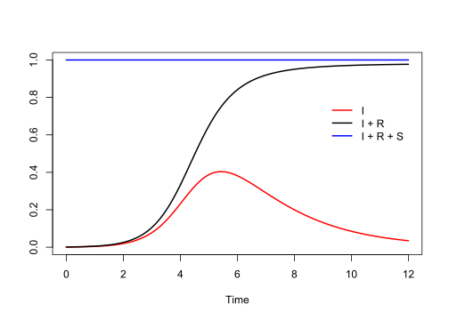

Let say when you were born, someone started the clock, and stop when you die. The time record on the clock is time-to-event.
If this person is bored, they stop the clock before you die, so the time to when you die is unknown. This is called censoring.
26.2 Cumulative density \(F(t)\)
Survival analysis is about time-to-event, so we start with probability of the time-to-event. \(F(t)\) is the probability that the event has occurred on or before time \(t\) (the time-to-event \(T\) is less than or equal to when we stop the clock at \(t\)).
\[F(t) = \mathbb{P}(T \leq t)\]
26.3 Probability density \(f(t)\)
\(f(t)\) is the instantaneous rate that an event will occur at exactly time \(t\).
\[f(t) = \frac{dF(t)}{dt}\]
Multiply \(f(t)\) by a small interval \(\Delta t\) to get an actual probability.
26.4 Survival function \(S(t)\)
\(S(t)\) is the probability that a subject is still event-free at time \(t\). In other words, the time-to-event \(T\) (when you die) is larger than a chosen time point \(t\) (when you stop the clock).
\[S(t) = \mathbb{P}(T > t)\]
Let say on the date you were born, 100 babies were also born at the hospital. Someone started the clock. Now after 30 years, 80 are still alive.
Think of it as: among those still alive at time \(t\), how many are expected to experience the event per unit time in the next instant.
On the date you were born, 100 babies were also born at the hospital. Someone started the clock. Now after 30 years, 80 are still alive (\(S(\text{30 years}) = 0.8\)). Suppose the density at 30 years is \(f(\text{30 years}) = 0.01 \text{ year}^{-1}\) (1 % chance of dying in the next year for an individual).
They are the same word, using in different fields, hazard = rate = incidence:
Rate: number of new events that occur during specified time period.
Incidence: when the event is a disease, it is called incidence.
Hazard: in survival analysis, it is called hazard.
26.7 IDM and survival analysis
Much of infectious disease modelling is derived from, or at least shares, key concepts with survival analysis (Hay et al., 2024).
In the SIR model, susceptibles become infectious at the force of infection\(\lambda(t)\). In other words, \(\lambda(t)\) is the instantaneous rate at which a still‐susceptible person becomes infected at time \(t\).
This is exactly the definition of a hazard function in survival analysis.
\[
\lambda(t)=h_{\text {infection }}(t)=\frac{\text { density of new infections at } t}{\text { probability of still being susceptible at } t}
\]
So the jump from S to I shares the same mathematics as any “time-to-event” clock, here the “event” is infection instead of death.
Linking survival analysis to infectious disease modelling
Survival analysis
Infectious disease modelling
Explanation
Survival function\(S(t)=P(T>t)\)
Proportion susceptible in a cohort model
At each moment, the curve of remaining susceptibles mirrors a survival curve.
Hazard ratio
Relative risk under intervention
Compare two forces of infection (e.g. with vs without masks) → HR = \(\lambda_1/\lambda_0\).
Competing risks
Multiple exit routes from S (e.g. infection by strain A vs strain B)
Each strain has its own hazard; the sub-hazards sum to the total risk of leaving S.
Cumulative hazard\(H(t)=\int_0^t h(u)\,du\)
Attack rate over time
\(1-\exp[-H(t)]\) gives the cumulative proportion ever infected—often called the final size in a closed SIR outbreak.
Time-varying covariate in Cox model
Seasonal contact pattern\(\beta(t)\)
A sinusoidal \(\beta(t)\) modulates the hazard exactly like a time-varying coefficient in survival analysis.
Generation-time / waiting-time density\(f(t)\)
Serial interval distribution
The PDF of when an infectee infects others drives renewal-equation models just as \(f(t)\) drives failure timing.
Mixture cure model
Partial immunity / vaccination
A fraction \(\pi\) is “cured” (fully immune); the rest face the usual infection hazard.
Left truncation (enter study late)
Seeding an epidemic
Only individuals present at time \(t_0\) are modelled; earlier infections are truncated away.
library(deSolve)parameters <-c(beta =2, gamma =0.5) # parameter valuesstate <-c(S =0.999, I =0.001, R =0) # starting values for the system# Definition of the system of ODE'sSIR_ODE <-function(time, state, parameters) {with(as.list(c(state, parameters)), {# rate of change dS <--beta * S * I dI <- beta * S * I - gamma * I dR <- gamma * I# return the rate of changelist(c(dS, dI, dR)) })# end with(as.list ...}# Now run the system for some time, using the ode() function of {deSolve}times <-seq(0, 12, by =0.01)out <-ode(y = state,times = times,func = SIR_ODE,parms = parameters)out <-as.data.frame(out)plot( out$time, out$I,type ="l",lwd =2,xlab ="Time",ylab ="",ylim =c(0, 1),col ="red")lines(out$time, out$I + out$R, type ="l", lwd =2)lines( out$time, out$I + out$R + out$S,type ="l",lwd =2,col ="blue")legend(12,0.8,c("I", "I + R", "I + R + S"),lwd =2,col =c("red", "black", "blue"),bty ="n",xjust =1)

gen_SIR <-function(beta, gamma, S0, I0, R0) {# Start with S0 susceptible, I0 infected and R0 recovered, at time t=0 T <-0 S <- S0 I <- I0 R <- R0 n <- S0 + I0 + R0 dfr <-matrix(0, 2* n, 5)# time, S, I, R, ev (1 for infection, 0 for recovery) dfr[1, ] <-c(T, S, I, R, 1) i <-1while (I >0) {# run until no more infecteds left i <- i +1# currently I infected, S susceptibles, determin rates rate_inf <- beta * I * S / n rate_rem <- gamma * I rate_tot <- rate_inf + rate_rem# time point of new event Tev <-rexp(1, rate_tot)# determine type of event ev <-sample(0:1, size =1, prob =c(rate_rem, rate_inf)) T <- T + Tevif (ev ==1) {# new infection S <- S -1 I <- I +1 } else {# removal I <- I -1 R <- R +1 } dfr[i, ] <-c(T, S, I, R, ev) } dfr <-as.data.frame(dfr)names(dfr) <-c("T", "S", "I", "R", "ev")return(dfr)}n <-1000# Parametersbeta <-2gamma <-0.5# Generateset.seed(2023)dfr <-gen_SIR(beta, gamma,I0 =1,S0 = n -1,R0 =0)dfr <-subset(dfr, T >0| I >0)# remove rows where I=0, except for T=0dfr2023 <- dfr # save for laterhead(dfr, n =12)
plot( dfr$T, dfr$I,type ="s",lwd =2,xlab ="Time",ylab ="",ylim =c(0, n),col ="red")lines(dfr$T, dfr$I + dfr$R, type ="s", lwd =2)lines( dfr$T, dfr$I + dfr$R + dfr$S,type ="s",lwd =2,col ="blue")legend(5,0.8,c("I", "I + R", "I + R + S"),lwd =2,col =c("red", "black", "blue"),bty ="n",xjust =1)
dfr <- dfr2023 # reuse the first data with seed 2023n <- dfr$S[1] + dfr$I[1] + dfr$R[1]Ntau <-sum(dfr$ev[-1]) # total number of new infectionsNdfr <-nrow(dfr)dfr$length_int <-c(dfr$T[-1] - dfr$T[-Ndfr], 0)intSI <-sum(dfr$S * dfr$I * dfr$length_int)betahat_MLE <- Ntau / (intSI / n)betahat_MLE
[1] 1.987948
Hay, J. A., Routledge, I., & Takahashi, S. (2024). Serodynamics: A primer and synthetic review of methods for epidemiological inference using serological data. Epidemics, 100806. https://doi.org/10.1016/j.epidem.2024.100806